1 · The Sense of Hearing, Taste, and Smell
Instructional Objectives
- Describe the function of the auditory pathway and list the major events in the physiology of hearing.
- Explain the function of chemoreceptors for taste and olfaction, and compare and contrast the types of taste and the taste pathway.
- Describe the function of the olfactory pathway and the physiology of equilibrium.
1.1 Cochlear Mechanics & the Auditory Pathway IO 1
Sound first crosses the tympanic membrane, whose area is about 17× larger than the oval window — concentrating force to overcome the impedance mismatch between air and cochlear fluid — before passing through the ossicular chain (malleus, incus, stapes). A protective attenuation reflex (stapedius and tensor tympani muscles, the stapedius being the body's smallest skeletal muscle) contracts in response to loud sound, damping transmission by 30–40 dB and specifically dulling low-frequency sounds like one's own voice.
Inside the bony cochlea, three fluid-filled tubes — the scala vestibuli, scala media, and scala tympani — surround the organ of Corti, which sits on the basilar membrane and carries the hair cells (stereocilia shearing against the overlying tectorial membrane as the basilar membrane vibrates). Bending stereocilia one way depolarizes a hair cell, the other way hyperpolarizes it; inner hair cells carry about 90% of the auditory signal even though outer hair cells outnumber them 3–4 to 1 (outer cells instead tune inner-cell sensitivity). The basilar membrane's ~30,000 fibers get longer, thinner, and about 100× less stiff from base to apex, so high frequencies resonate near the stiff base and low frequencies near the flexible apex — the place principle that lets position along the membrane encode pitch, while the degree of displacement encodes loudness.
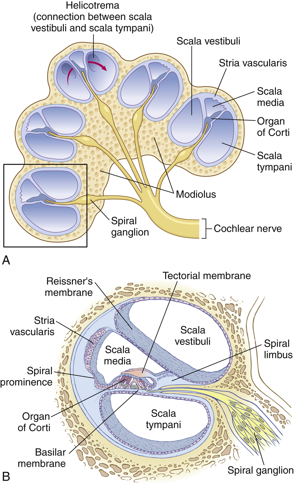
Sound intensity is expressed logarithmically in decibels (a 10-fold energy increase = 1 bel = 10 dB) because the ear spans such an enormous intensity range. Centrally, the auditory cortex is arranged in tonotopic maps (high frequency at one end, low at the other), and destroying it abolishes discrimination of sound patterns even though basic detection may persist subcortically. Sound localization splits between the superior olivary nuclei: lateral nuclei compare intensity differences between the ears, while medial nuclei compare the time lag between them.
1.2 Taste Bud Physiology & Olfactory Transduction IO 2–3
Because the tongue can only distinguish five basic qualities — sweet, sour, salty, bitter, and umami — plus texture, most of what we perceive as "taste" is actually smell. Taste buds hold up to 13 receptor types (sodium, potassium, chloride, sweet, bitter, glutamate, hydrogen ion, and more); sour comes from H+ (citric acid threshold ~2 mM), salty from ionized sodium (~10 mM), sweet mostly from organic compounds (sucrose ~20 mM), umami from glutamate (MSG <10 mM), and bitter from nitrogen-containing alkaloids (quinine ~0.008 mM, strychnine ~0.0001 mM) — bitter's exquisite sensitivity, especially in infants, is a poison-detection survival mechanism. Salty/sweet/sour/umami all depolarize taste cells by distinct mechanisms, but bitter uniquely triggers an internal Ca2+ release with no external calcium required. Circumvallate papillae (posterior tongue, ~50% of buds), foliate papillae (lateral edges, ~25%), and fungiform papillae (anterior surface, ~25%) hold the taste buds themselves, while purely tactile filiform papillae give the tongue its texture; taste travels via CN VII (anterior 2/3), CN IX (posterior 1/3), and CN X (posterior mouth) to the solitary nucleus, then thalamus, then cortex.
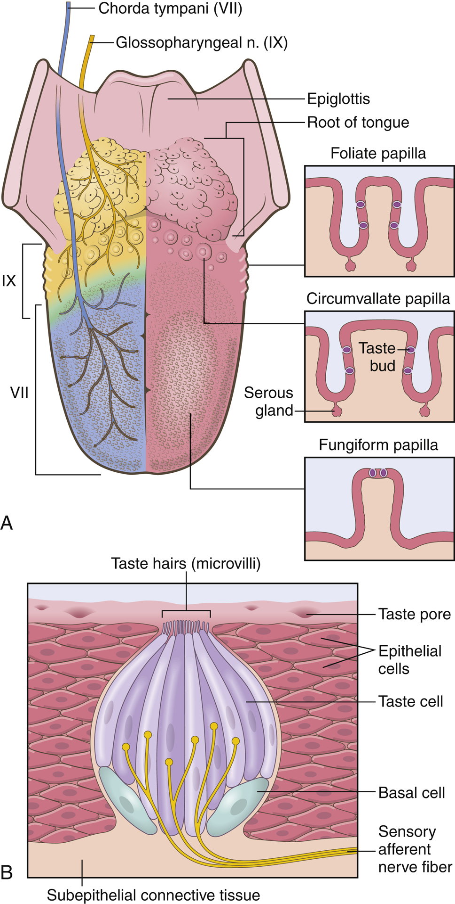
Olfaction, by contrast, is described as the least understood and least developed human special sense. Odorant-binding receptors sit on the cilia of olfactory cells (superior nasal cavity); binding activates a G-protein → adenylyl cyclase → cAMP cascade that opens Na+ channels and depolarizes the cell — mechanistically similar to phototransduction's second-messenger logic. Of roughly 1,000 olfactory receptor genes, only about 400 encode working receptors, but each can bind many odorants with different affinities, so the combination of receptors activated (not one dedicated receptor per smell) encodes a unique odor profile. To be smelled at all, a substance must be volatile, at least slightly water-soluble (to cross the mucus), and at least slightly lipid-soluble (to interact with the membrane); olfactory receptors themselves adapt very slowly, yet perceived smell fades quickly — implying a central adaptation mechanism, just as with taste. The olfactory nerve (CN I) is the only cranial nerve dedicated purely to smell, projecting to medial (older) and lateral (newer) olfactory cortical areas.
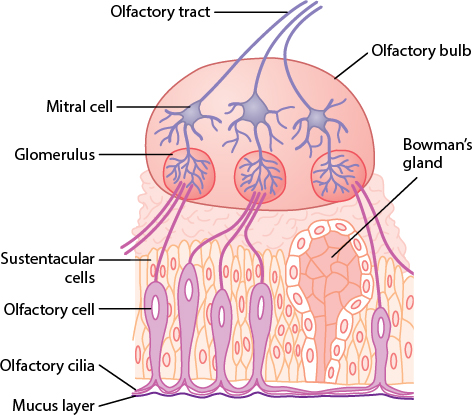
2 · Cardiac Physiology
Instructional Objectives
- Review the components of the cardiovascular system, and discuss the function of cardiac muscle and cardiac valves.
- Discuss the cardiac conduction system, including the SA node, AV node, and Purkinje fibers.
- Discuss nervous system input to cardiac function, including sympathetic and parasympathetic effects on rate, conduction, and contractility.
2.1 Cardiac Muscle, EC Coupling & the Cardiac Cycle IO 1
Atrial and ventricular muscle are each electrically continuous syncytia (linked by gap junctions at intercalated disks), separated from each other by a fibrous insulating skeleton so that the only path for excitation between them is the conduction system. Cardiac muscle's action potential is much longer than skeletal muscle's (~200 ms plateau versus 1–5 ms) because decreased K+ conductance and increased Ca2+ conductance sustain depolarization; this long plateau, paired with a correspondingly long absolute refractory period (0.25–0.30 s in the ventricles), makes cardiac tetany impossible. Excitation-contraction coupling here is calcium-activated calcium release (CACR): Ca2+ entering through L-type channels in the T-tubule directly triggers the ryanodine receptor to release far more Ca2+ from the SR — unlike skeletal muscle's purely voltage-triggered release — which is why ventricular contraction strength depends on extracellular calcium.
The cardiac cycle alternates systole (isovolumic contraction, ejection) and diastole (isovolumic relaxation, rapid inflow, diastasis, atrial systole); the first heart sound (S1, "lub") marks A-V valve closure and the second (S2, "dub") marks semilunar valve closure, with papillary muscles preventing valve leaflets from bulging backward (not helping them close). Ejection fraction (EF = SV/EDV) is the clinical yardstick for pumping capability; preload (passive tension at end-diastole, proportional to EDV) and afterload (the pressure the ventricle must overcome, proportional to mean arterial pressure) together with contractility (force at a given fiber length — boosted by heart rate, sympathetic stimulation, cardiac glycosides, or extracellular Ca2+) determine stroke volume.
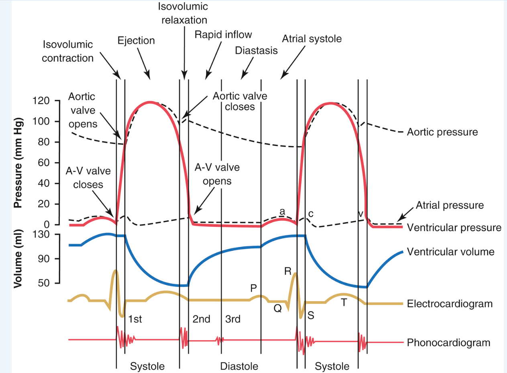
The Frank-Starling mechanism — increased venous return stretches the ventricle, producing a stronger contraction — operates independent of innervation or contractility changes, letting cardiac output double without any rise in heart rate.
2.2 Conduction System & Autonomic Control IO 2–3
The SA node is the heart's pacemaker simply because it discharges fastest (70–80/min, versus 40–60/min at the AV node and 15–40/min in Purkinje fibers); its unstable, less-negative resting potential (−55 to −60 mV) inactivates fast Na+ channels, so its action potential instead depends on a slow inward "funny" Na+ current (phase 4) and inward Na+/Ca2+ current through L-type channels (phase 0). The impulse spreads through the atria via internodal pathways, then meets its single largest delay at the A-V node (~0.09 s) — letting the atria finish emptying before ventricular contraction begins — before racing through the A-V bundle and the fast, richly gap-junctioned Purkinje system (2–4 m/s, versus 0.2–0.5 m/s in the node) to depolarize the ventricles (QRS ≈ 0.06 s).
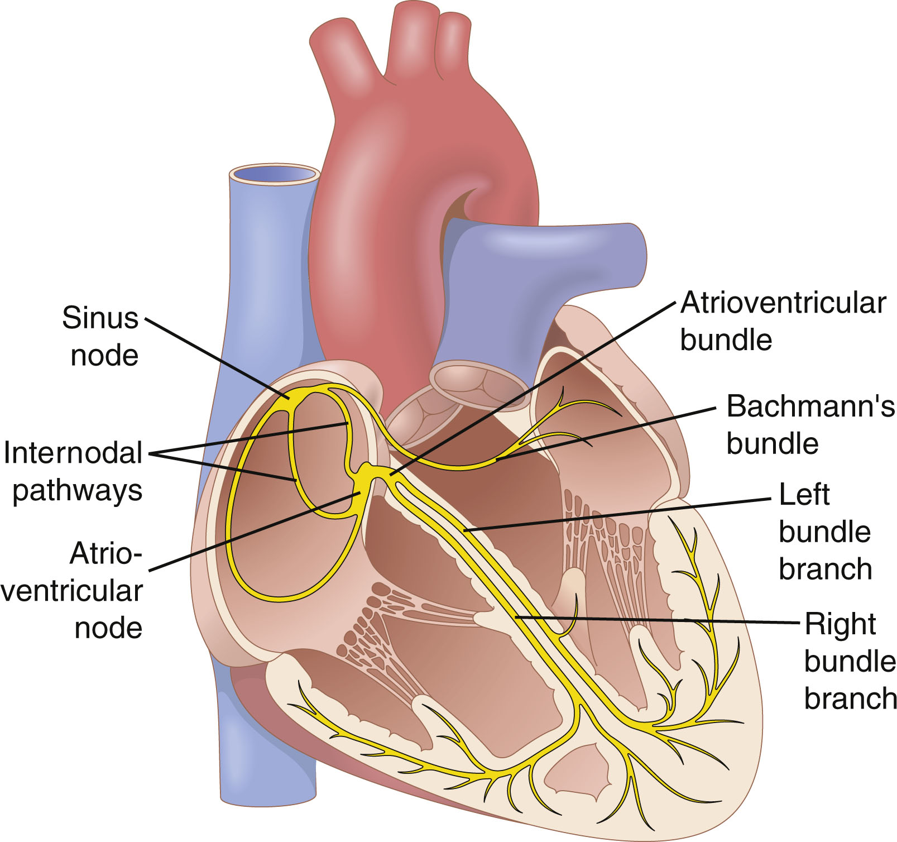
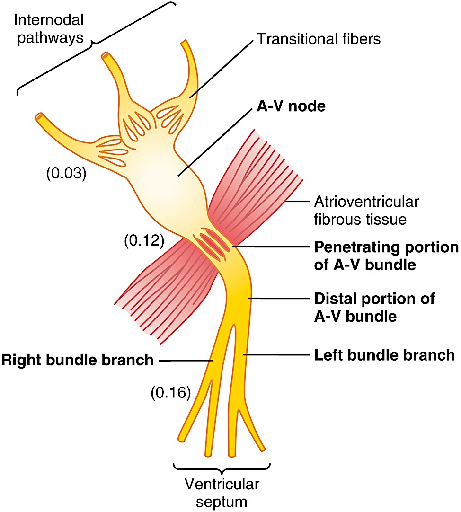
Autonomic input is bidirectional and precisely receptor-specific: sympathetic stimulation acts through beta-1 receptors to increase rate (+chronotropic), conduction velocity (+dromotropic), and contractility (+inotropic) — norepinephrine increases SA node Na+/Ca2+ permeability, producing a more positive resting potential that accelerates self-excitation. Parasympathetic (vagal) stimulation acts through muscarinic receptors to decrease all three — acetylcholine hyperpolarizes the SA node via increased K+ permeability, and can even transiently halt conduction (with a lower pacemaker taking over as "ventricular escape"). Ongoing background vagal tone keeps resting heart rate below the SA node's intrinsic rate — cutting the vagi, or blocking muscarinic receptors with atropine, unmasks a faster heart rate.
3 · Circulatory Physiology I
Instructional Objectives
- Outline the flow of blood through the systemic and pulmonary circulations, and describe how blood pressure changes throughout the cardiovascular system.
- Discuss the role and components of the lymphatic system, and compare and contrast how solutes and fluids are exchanged in capillaries.
- Describe the factors that regulate the volume of blood flow, and describe the factors that determine mean arterial pressure and systemic vascular resistance.
3.1 The Vascular Tree, Pressure, Flow & Resistance IO 1, 3
Roughly 84% of the body's ~5 L blood volume sits in the systemic circulation, and within that, veins/venules hold the majority (~60–64%) as a low-pressure reservoir, while arteries carry only a small fraction under high pressure. Capillaries have by far the largest total cross-sectional area (~1000× the aorta's) — since velocity = flow/area, this makes capillary blood flow the slowest in the body, giving time for exchange. Pressure itself falls from ~100 mmHg in large arteries to near 0 in the right atrium, with the single largest drop occurring across the arteriolar-capillary junction, reflecting arterioles' role as the circulation's main resistance site.
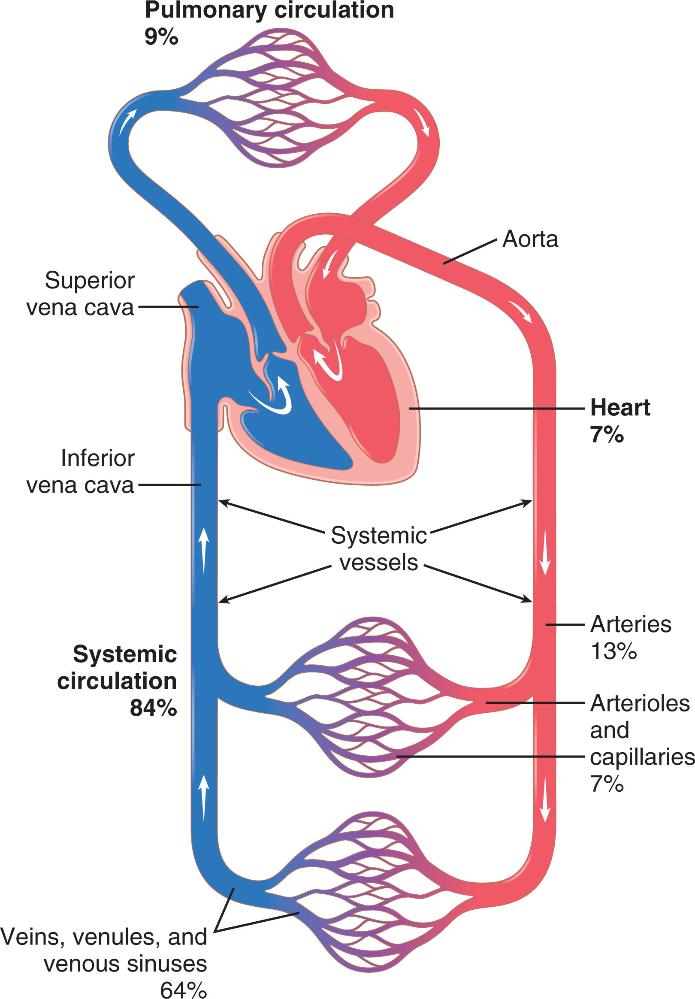
Flow through any vessel follows Q = ΔP/R: the pressure difference across it divided by its resistance. Resistance is exquisitely sensitive to vessel radius (Poiseuille's law: conductance ∝ r⁴), so a vessel narrowing to half its radius suffers a 16-fold rise in resistance — the physical basis of arteriolar vasomotor control of blood flow. In a parallel arrangement (as in the peripheral circulation), total resistance is actually lower than any single vessel's resistance, which is what allows independent regulation of flow to each organ. Veins are about 8× more distensible and 24× more capacitant than arteries — a given volume change produces a much smaller pressure change in a vein — which is precisely what makes them such an effective reservoir; venoconstriction shifts stored blood into the arterial circulation and raises cardiac output. Pulse pressure (systolic − diastolic, e.g., 120 − 80 = 40 mmHg) is measured clinically via Korotkoff sounds during cuff deflation, and dampens progressively in smaller peripheral arteries as a function of arteriolar resistance and large-vessel compliance.
3.2 Capillary Exchange, Lymphatics & Local Blood Flow Control IO 2, 3
Capillary walls — a single endothelial layer over a basement membrane, with 6–7 nm intercellular slit pores — let lipid-soluble gases (O2, CO2) diffuse straight through the membrane, while lipid-insoluble solutes (water, ions, glucose) cross via the intercellular clefts; permeability falls off steeply with molecular size (water ≈1.0, albumin ≈0.0001). Net fluid movement across the capillary wall is set by four opposing Starling forces — capillary hydrostatic pressure and interstitial colloid osmotic pressure push fluid out; plasma colloid osmotic pressure (about 75% from albumin) and interstitial fluid pressure pull it in. The balance nets a small outward filtration at the arteriolar end (~13 mmHg) and a small inward reabsorption at the venous end (~7 mmHg); overall, roughly 90% of filtered fluid is reabsorbed, with the remaining 10% returned to the circulation by the lymphatics — an accessory route (also central to fat absorption and immune surveillance) whose one-way flap valves (formed by overlapping endothelial cells) and pumping (smooth muscle contraction, external compression, arterial pulsation) keep lymph moving toward the great veins.
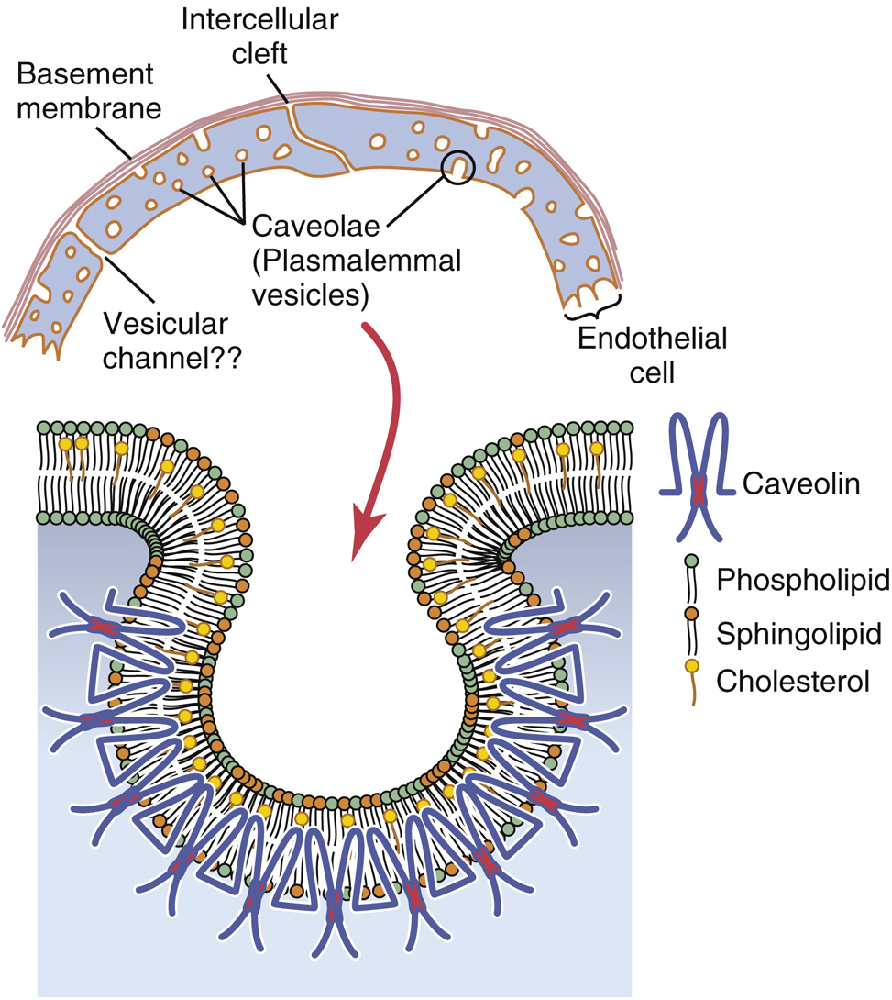
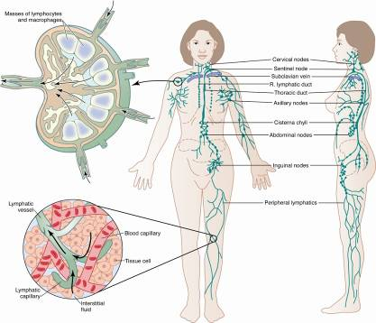
Local blood flow is matched to each tissue's own metabolic needs via the vasodilator theory (active tissue releases adenosine, CO2, lactic acid, K+, H+, etc., which dilate local vessels) and the oxygen demand theory (falling local O2 itself triggers dilation) — together producing autoregulation, the ability of a tissue to hold its own blood flow roughly constant across a wide range of arterial pressures. A complementary myogenic mechanism follows Laplace's law (wall tension ∝ pressure × radius / wall thickness): rising pressure stretches the arteriole wall, triggering reflexive constriction that limits the pressure-induced rise in flow. Long-term flow regulation instead adjusts the tissue's actual vascularity (via angiogenesis, driven by factors like VEGF and FGF released from ischemic or high-metabolic-rate tissue) and is more powerful than any acute mechanism. Centrally, the medullary/pontine vasomotor center (VMC) exerts ongoing sympathetic vasoconstrictor tone (releasing norepinephrine) that sets baseline vessel diameter throughout the body.
4 · Circulatory Physiology II
Instructional Objectives
- Describe how blood pressure is regulated, including the renal-body fluid mechanism and the renin-angiotensin system.
- Describe the relationship between cardiac output, heart rate, and stroke volume, and the factors affecting venous return.
- Describe the function of chemoreceptor and baroreceptor reflexes in the short-term regulation of arterial pressure.
4.1 Long-Term BP Control & the Renin-Angiotensin System IO 1
Over the long run, the kidneys dominate blood pressure control through the renal-body fluid mechanism: rising extracellular fluid volume raises arterial pressure, and that higher pressure directly drives the kidney to excrete more salt and water (pressure natriuresis/diuresis), returning volume — and pressure — to normal. This negative feedback loop has such high gain that, critically, changing total peripheral resistance alone cannot permanently shift arterial pressure; only shifting the renal function curve itself (e.g., altering renal vascular resistance) produces a lasting change — the graphical intersection of the renal output curve and the salt/water intake line defines the long-term equilibrium pressure.
The renin-angiotensin system layers a faster-acting mechanism on top: falling pressure triggers renin release from the kidney's afferent arteriolar smooth muscle, which cleaves angiotensinogen (from the liver) into angiotensin I; angiotensin-converting enzyme in the pulmonary endothelium then produces angiotensin II, a potent vasoconstrictor that also promotes renal sodium/water retention and shifts the renal function curve rightward. This system is a critical buffer during hemorrhage — blocking it prevents blood pressure from recovering as effectively after a large pressure drop. Angiotensin II, aldosterone, sympathetic activity, and endothelin all suppress renal excretion (raising pressure); atrial natriuretic peptide, nitric oxide, and dopamine enhance it (lowering pressure).
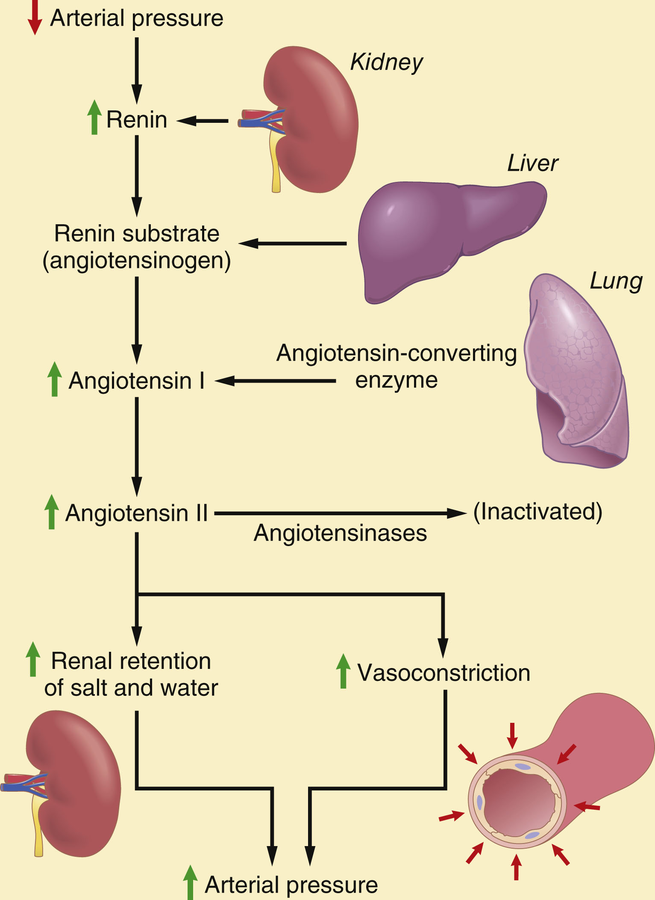
4.2 Cardiac Output, Venous Return & Neural BP Control IO 2–3
Venous return and cardiac output must always be equal, and — counterintuitively — it is largely venous return that controls cardiac output: whatever blood flows into the right atrium, a healthy heart automatically pumps back out (the Frank-Starling law). Two additional mechanisms tune heart rate to filling: direct stretch of the sinus node itself can raise rate by 10–15%, and the Bainbridge reflex (atrial stretch signaling to the vasomotor center, which responds via sympathetic/vagal output) raises it further, preventing blood from damming up in the veins. Venous return itself depends on three factors — right atrial pressure (a backward-impeding force), the mean systemic filling pressure (the equilibrium pressure, ~7 mmHg, when all flow stops — raised by increased blood volume or sympathetic venoconstriction), and the resistance to venous return (about two-thirds venous, one-third arteriolar). During exercise, sympathetically driven increases in venous return and cardiac output — via venoconstriction, higher filling pressure, and lower resistance in active muscle — can multiply resting cardiac output several-fold, while functional hyperemia locally matches flow to the working muscle's metabolic demand.
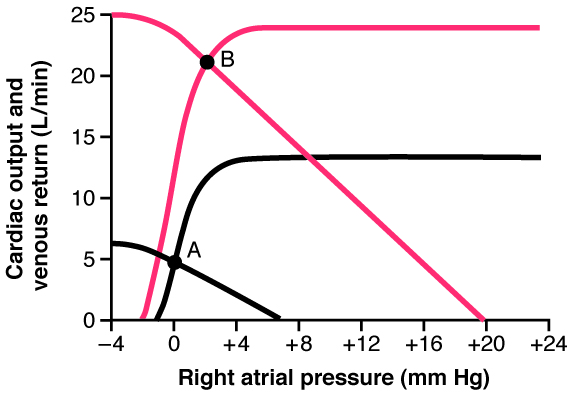
Short-term, second-to-second blood pressure control belongs to the nervous system. Arterial baroreceptors (stretch receptors in the carotid sinus and aortic arch) fire more as pressure rises, inhibiting the vasoconstrictor center and activating the vagal center to bring pressure back down — most sensitive right around 100 mmHg, and effective at damping daily pressure swings, though they "reset" with sustained pressure changes and so contribute nothing to true long-term control. Chemoreceptors in the carotid/aortic bodies, silent above 80 mmHg, fire in response to O2 lack, CO2 excess, or acidosis, further exciting the vasomotor center once pressure has already fallen substantially. The CNS ischemic response — triggered when falling cerebral blood flow lets CO2 accumulate — is one of the most powerful sympathetic activators in the body, an emergency mechanism to preserve brain perfusion at nearly any cost. The heart's own perfusion is a special case: normal coronary flow (~225 mL/min, ~4–5% of cardiac output) is squeezed during systole (muscle compressing the vessels) and occurs mainly in diastole, and it is governed almost entirely by local metabolic factors (oxygen chief among them) rather than nerves — just like skeletal muscle.
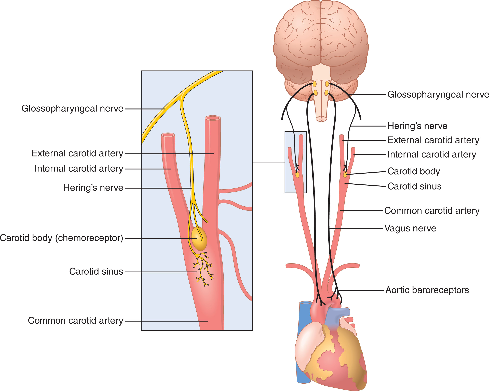
5 · Physiology of Vision
Instructional Objectives
- Describe the special sense of vision, and compare and contrast the functions of each part of the eye.
- Compare and contrast the functions of each photoreceptor of the eye, including phototransduction and color vision.
- Describe the function of the optic tract pathway, including retinal processing, eye movement control, and binocular vision.
5.1 Optics, Accommodation & Intraocular Fluid IO 1
Light bends at each interface between media of different refractive index (the ratio of light's speed in air to its speed in that medium); about two-thirds of the eye's total refractive power (~59 diopters, since the retina sits ~17 mm behind the eye's optical center) comes from the fixed curvature of the cornea, which is why swimming underwater — where water's refractive index nearly matches the cornea's — blurs vision so badly. The lens supplies the remaining, adjustable power: parasympathetically driven contraction of the ciliary muscle releases tension on the suspensory (zonule) fibers, letting the lens round up and thicken — accommodation — boosting its power from about 20 to as much as 34 diopters for near vision. Presbyopia, the age-related loss of this ability, results from denaturation of lens proteins that stiffens the lens (accommodation range falls from ~14 diopters in childhood to near 0 by age 70).
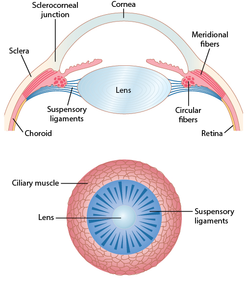
Two fluid-filled chambers keep the globe distended: the freely circulating aqueous humor in front of the lens (secreted by the ciliary body, draining through the trabecular meshwork into the canal of Schlemm) and the gel-like vitreous humor behind it. Intraocular pressure (normally ~15 mmHg) is set by resistance to aqueous outflow at the canal of Schlemm; chronic elevation — often associated with long-standing systemic hypertension — compresses the optic nerve axons and is the central risk factor for glaucoma.
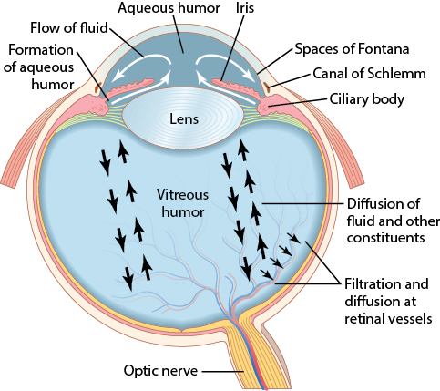
5.2 Photoreceptors, Retinal Processing & the Visual Pathway IO 2–3
Each retina packs about 100 million rods (achromatic, highly sensitive, saturate in daylight, built for night/scotopic vision) and 3 million cones (trichromatic — three photopsins tuned to red/green/blue — less sensitive but capable of fine acuity and color, built for day/photopic vision). At the fovea centralis, only cones are present, wired 1:1 to bipolar cells and with neurons/vessels swept aside so light hits them almost unobstructed — the anatomical basis for the eye's sharpest vision. Absorbing a photon flips retinal from its 11-cis to all-trans form within rhodopsin, splitting it away and activating a second-messenger cascade that closes Na+/Ca2+ channels and hyperpolarizes the photoreceptor — the opposite polarity from most sensory transduction. Because retinal is regenerated from vitamin A, deficiency directly causes night blindness (nyctalopia) and remains a leading cause of preventable childhood blindness worldwide. Deep to the photoreceptors, a melanin-rich pigment layer absorbs stray light to preserve contrast — its absence in albinism scatters light so badly that acuity rarely exceeds 20/200 even with correction.
Before signals even leave the eye, horizontal cells provide inhibitory lateral feedback (lateral inhibition) that sharpens contrast, while amacrine cells (about 30 types) begin further analysis (onset, offset, or motion detection) en route to the ganglion cells, which alone fire true action potentials — continuously, at a spontaneous baseline, with visual information superimposed as changes in that rate. Ganglion cells split functionally into small, color/detail-sensitive, slow-conducting P cells (parvocellular LGN layers) and larger, fast, low-contrast/motion-sensitive M cells (magnocellular LGN layers). All ~1 million ganglion axons converge at the optic disc to form the optic nerve — since no photoreceptors exist there, it creates each eye's natural blind spot.
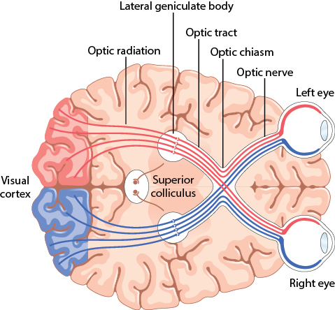
At the optic chiasm, nasal retinal fibers cross while temporal fibers stay put, so each hemisphere ultimately receives the corresponding half of both eyes' visual fields; the lateral geniculate nucleus keeps the two eyes' inputs segregated by layer (relaying to the primary visual cortex in the calcarine fissure, which devotes hugely disproportionate area to the macula/fovea) — but this eye-of-origin separation is lost in the visual cortex itself, whose alternating ocular-dominance columns let it compare the two eyes' images. Beyond the cortex, at least three parallel pathways are thought to process motion, depth/form, and color, though how the brain unifies these into one coherent percept remains poorly understood. Retinal projections beyond the LGN reach the pretectal nuclei (pupillary light reflex and accommodation), the superior colliculus (rapid eye movements), and the suprachiasmatic nucleus (circadian rhythm). Finally, the close spacing and forward orientation of human eyes (a shared ~104° visual field) enables stereoscopic depth perception — a predator's advantage, traded off against the wide, movement-detecting panoramic view of laterally placed prey-animal eyes.